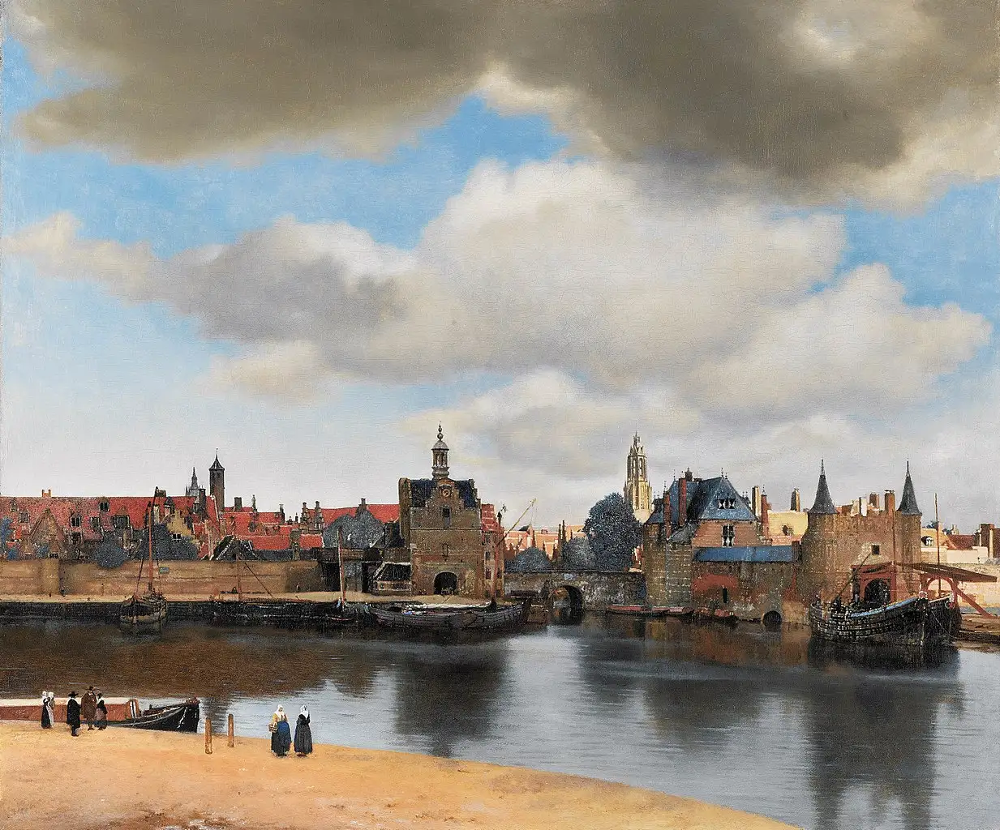
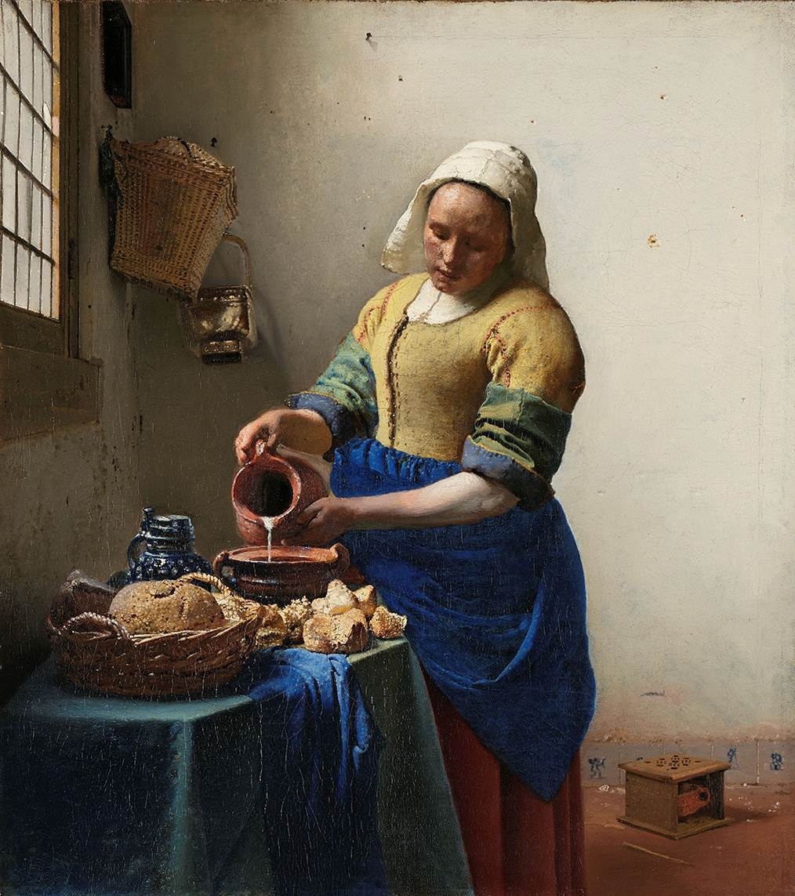
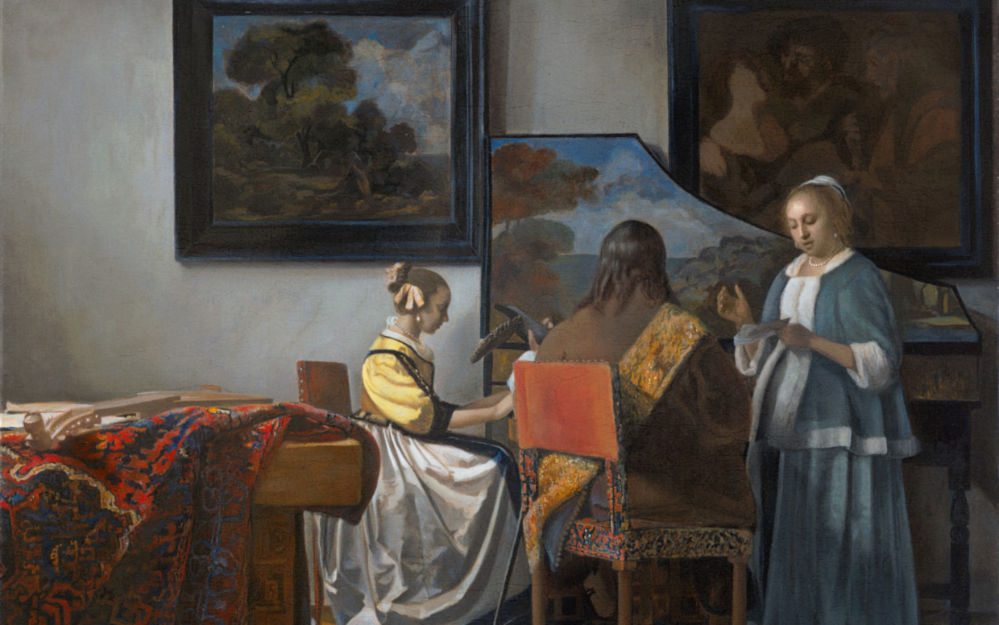
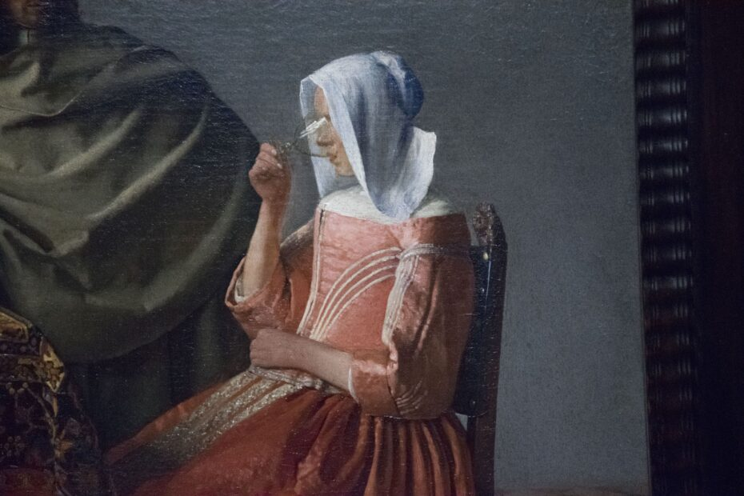
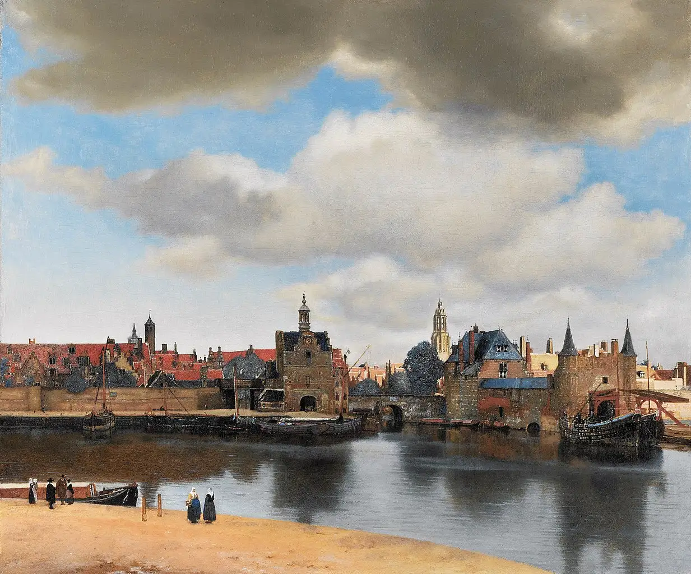
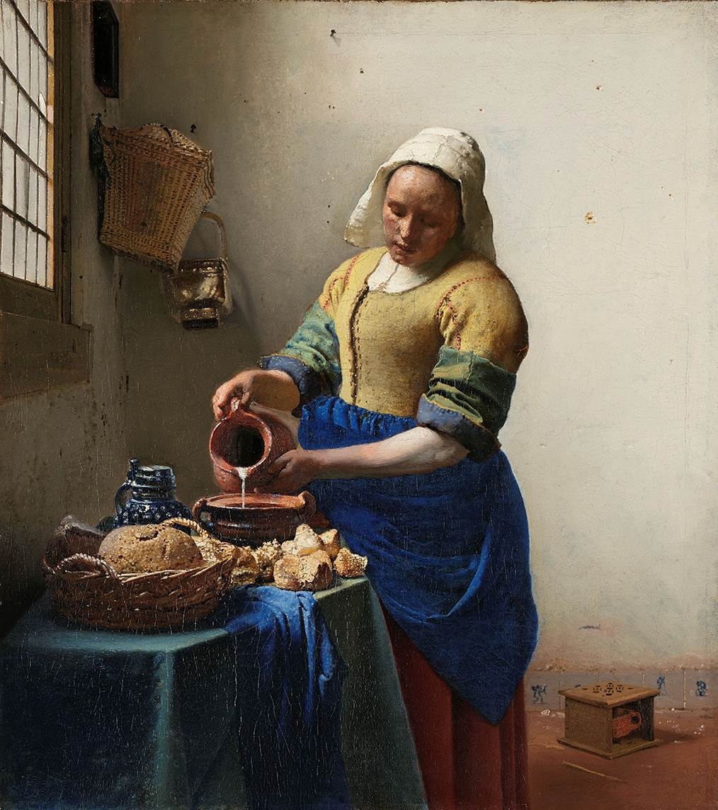
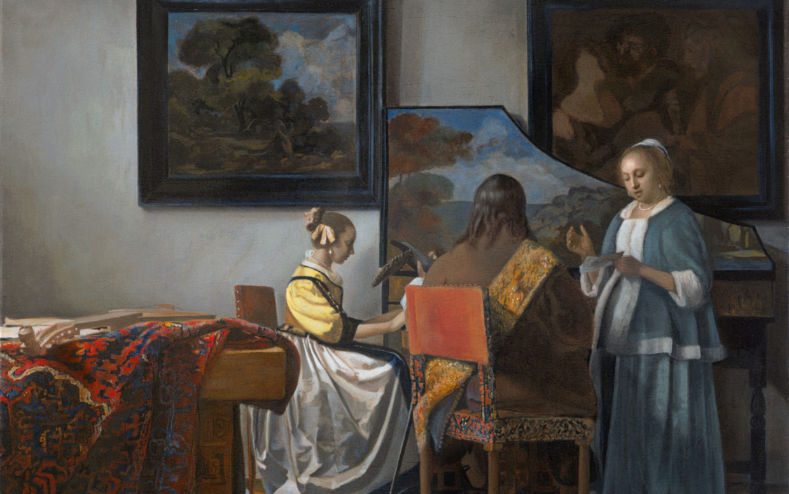
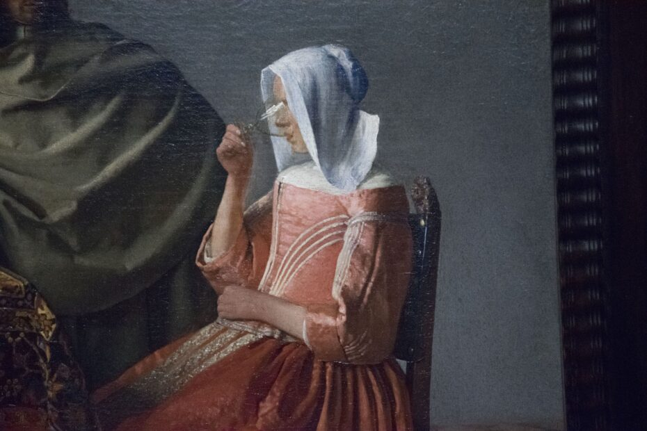

Torna alla home page
Johannes Vermeer
Johannes Vermeer è stato un pittore olandese del XVII secolo, noto per i suoi dipinti di scene domestiche e ritratti. Nato nel 1632 a Delft, Vermeer ha trascorso gran parte della sua vita in questa città, dove ha creato molte delle sue opere più celebri. Vermeer è noto per la sua maestria nell'uso della luce e del colore, così come per la sua abilità nel catturare l'atmosfera intima e tranquilla delle sue scene. Tra le sue opere più famose ci sono "La ragazza con l'orecchino di perla", "Veduta di Delft" e "L'arte della pittura". Nonostante Vermeer abbia prodotto solo un numero limitato di dipinti durante la sua vita, il suo lavoro è ampiamente considerato tra i più importanti della pittura olandese del periodo d'oro. La sua influenza si estende ben oltre il suo tempo, ispirando generazioni di artisti successivi.

 






